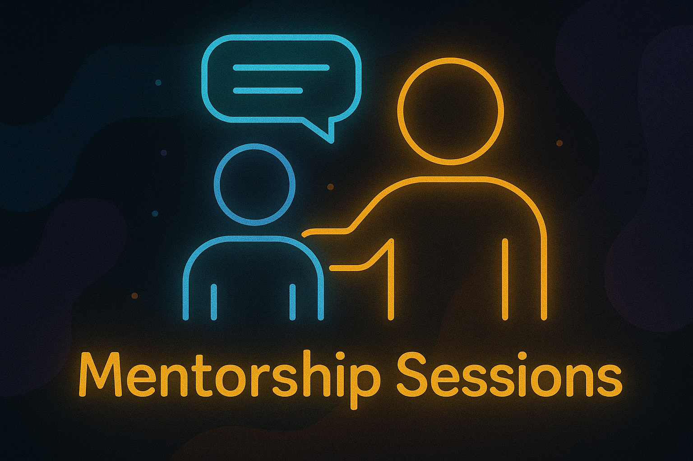

Guided Growth: Lessons from Mentorship
My Mentorship Journey: Week-by-Week Learning and Growth
By Tanu Namdeo
Introduction
I’m excited to share my experience in a unique 3-month mentorship program called Code Without Barriers (CWB), which I enrolled in through my college. From our entire Data Science batch, I’m the only one selected—likely because I scored a 9.04 SGPA this semester. This mentorship has been a transformative journey so far, packed with technical learning, soft skill development, and personal growth.
Week 1: The Kickoff — Soft Skills & Tech Foundations
üìÖ Session Date: 19 May 2025
The mentorship started on a high note with a Toastmaster-style session led by our incredible mentor, Sunil Kumar. We focused heavily on the soft skills that are often overlooked but are crucial in the tech industry—leadership, effective communication, and networking.
Alongside these, we jumped into some technical basics:
- Installing and running MongoDB, including commands like
mongod --versionandmongosh. - A brief introduction to Apache Kafka, an event streaming platform that’s gaining huge traction.
- Learning about valuable tech communities like Microsoft Reactor and meetup.com — great places for continuous learning and networking.
One key message that stuck with me was:
“Day 100 is not the same as Day 1.”
Showing up consistently, growing steadily, and documenting your journey can set you apart.
Weekly task: Install MongoDB and start exploring its functionalities.
Week 2: Building Your Profile and Networking Strategy
üìÖ Session Date: 26 May 2025
Week 2 was all about personal branding, content creation, and strategic networking. The session drew inspiration from the book “The Magic of Thinking Big” — emphasizing that your mindset shapes your outcomes. Think big, and big things will happen!
Key takeaways included:
- Creating and maintaining a clean, attractive, and purposeful online presence across platforms like GitHub, LinkedIn, YouTube, LeetCode, and HackerEarth.
- Networking is not about numbers but about connecting with like-minded people who support your growth.
- Addressing imposter syndrome — many of us experience self-doubt, but the solution is to keep showing up and sharing your work.
- Marketing yourself online is essential. It helps you gain visibility and opens doors to new opportunities.
We were encouraged to publicly share our learning progress, helping others and building our credibility.
Weekly tasks:
- Refine professional profiles
- Build a mini project
- Create a simple website to showcase it
- Manage projects and code using Git Bash
Big thanks again to Sunil Kumar for such an impactful session!
Week 3: Building Our Personal Brand — Your Portfolio Speaks
üìÖ Session Date: 01 June 2025
The third session centered on the power of personal branding with a standout message:
“Your portfolio speaks louder than your resume.”
Here’s what I learned:
- Portfolio websites are a must-have to showcase your projects, certifications, and your unique learning journey. They serve as your personal tech identity.
- Cloud skills are now essential; they’re everywhere in tech, and mastering them is a big advantage.
- A deeper dive into MongoDB basics, focusing on its NoSQL structure, flexibility, and commands like
show dbsanduse <db>. I also got recommendations to follow resources like W3Schools and MongoDB University. - Open discussions with peers about what topics to explore in upcoming sessions—such as internships, hackathons, database pipelines, and Snowflake basics.
My personal action points for the upcoming weeks:
- Start building my portfolio website
- Continue learning MongoDB basics
- Explore cloud platforms like Microsoft Azure
- Begin writing and sharing technical blogs
I’m extremely grateful to Sunil Kumar for his clarity, patience, and encouragement throughout this journey.
What’s Next?
This mentorship is just the beginning of an exciting chapter. Each week brings new insights, challenges, and opportunities to grow—not just technically, but as a confident professional ready to take on the tech world.
I look forward to sharing more updates and milestones as I progress. Stay tuned!